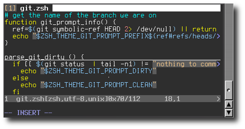

Estimated reading time: 2 minutes
Visual vim mode identifier¶
Paul Kerry rants about his problems with vim over the cooler today, and as a long time vim user I found it hard not to respond to some of the points.
All this mode switching makes it hard to know whether typing “Paul” is going to insert a huge block of code from the ether or insert, you know, “Paul” on the screen.
The point Paul is making is that when he is in normal mode, typing the “P” of ”Paul” can cause vim to insert a huge amount of text at the cursor. The text comes from the unnamed register, so it will be whatever potentially very large chunk of text he deleted or yanked last.
If he had just added set showmode to his ~/.vimrc he would have
a nice -- INSERT -- reminder in the bottom of his terminal window when in
insert mode, as can be seen in the screenshot on the right.
Another option that I use, combined with showmode, is to change the cursor
colour when switching to and from insert mode. This unfortunately doesn’t
work on all terminal types, which means you have to test them individually and
then set appropriate values for t_SI and t_EI on each terminal type. An
example for rxvt-based terminals, including my favourite rxvt-unicode, is
below:
if &term =~? '^rxvt' && exists('&t_EI')
let &t_EI="\033]12;red\007"
let &t_SI="\033]12;green\007"
endif
I use a green cursor to indicate insert mode, I tried a number of alternatives
but found keeping the same cursor colour as my shell sessions was the most
useful for me. You can use any colour your terminal supports, including the
extended 256 colour palette. For more information on accessing the colours from
the extended palette see the earlier Uber pink prompts tip.
You can also use the InsertEnter and InsertLeave events to call a function when changing mode. There really is no limit to what kind of notifications you can use with this method. Taking the idea too far we could use the awesome notifications from Simple notifications in awesome to display popups when we change mode:
au InsertEnter * !echo "notify.start('Insert mode started')" | awesome-client
au InsertLeave * !echo "notify.stop('Insert mode finished')" | awesome-client
Note that I didn’t say it was a good idea, just that it was possible!
Authenticate this page by pasting this signature into Keybase.
Have a suggestion or see a typo? Edit this page